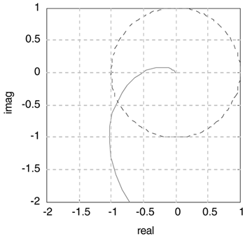

| 1: | Find the time-domain solution for the output of a first-order process, with an input sine wave of magnitude A at frequency w. |
| 2: | The peak day length (in terms of hours of daylight) occurs on 21 June, while the peak average daily temperature occurs on 21 July (30 days later). Assuming that the relationship between daylight hours and average daily temperature can be modeled by a first-order transfer function, estimate the time constant of Earth's weather system (provide the units). Also, what are the units of the "process gain"? |
| 3: | Apply the Ziegler-Nichols method to a second-order + dead time process

where kp = 1.5°F/gpm, q = 5 minutes, t1 = 3 minutes, t2 = 15 minutes.
Use a Bode plot to find critical (ultimate) proportional gain (kcu) for a P-only controller that will make the closed-loop system nominally stable (gain margin = 1, phase margin = 0). Also, find the ultimate period. Find the gain and phase margins for a Ziegler-Nichols P-only controller. How much gain uncertainty can be tolerated? How much dead-time uncertainty can be tolerated? Find the gain and phase margins for a Zielger-Nichols PI controller. How much gain uncertainty can be tolerated? How much dead-time uncertainty can be tolerated? Find the gain and phase margins for a Zielger-Nichols PID controller. How much gain uncertainty can be tolerated? How much dead-time uncertainty can be tolerated? Would you recommend the Ziegler-Nichols tuning if you desired the following gain and phase margins: gain margin, > 2.5; phase margin, > 60°? Compare the closed-loop responses, for step setpoint changes, of the controllers obtained in b–d. Show both output and manipulated input responses. Recommend a set of tuning parameters.
|
| 4: | For the open-loop system [go1(w) = gpgc(w)] below, find the gain and phase margins. Also, show your work on the diagram. The unit circle is plotted for convenience.  |
| 5: | Consider a pH control problem that has the transfer function
A PI controller with kc = 4.35 and tI = 69 yields the following Bode plot. Find the controller gain that will provide a gain margin of 2. |
| 6: | The Bode plots for a particular system are shown below. You know that there is no gain uncertainty in this process, however, when you implement the tuning parameters, the feedback system is unstable. At least how much additional dead time was not included in your model? |
| 7: | A first-order + time delay process is controlled by a PI controller. The Nyquist plot for kc = 4.9688 and tI = 12.5 is shown below. Keeping tI constant, find the proportional gain that will yield a gain margin of 3. |
| 8: | A process under P-only control has the following Bode plot, for kc = 1. What is the ultimate gain (kcu) and period (Pu)? If the Ziegler-Nichols recommended controller gain for P-only control is used, what will be the phase margin? Recall that Ziegler-Nichols recommended kc = 0.5 kcu for P-only control. |
| 9: | Consider the following Bode plot for a system under PI control.
Sketch the Nyquist diagram. How much can the controller gain be increased if a gain margin of 2 is desired? How much can the deadtime increase before the system goes unstable?
|